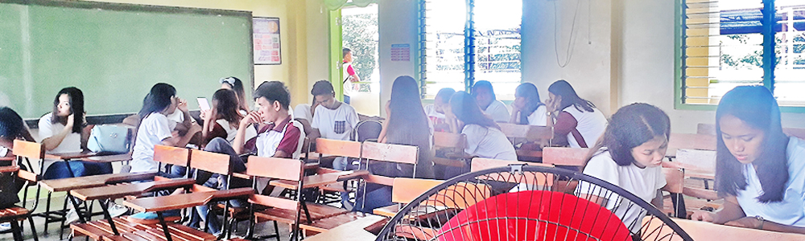
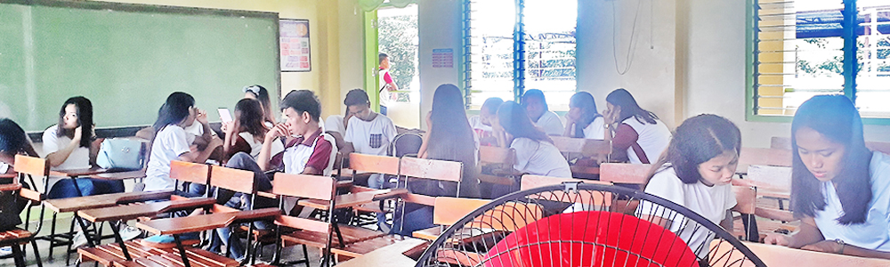

Sarrat National High School - Empowerment Technology 2019 -2020
Advocacies for Change
.gif) 
The Grade - 12 Ramsay Students presently under the subject empowerment technology that guides students to better use technology through its competencies are encouraged to promote advocacies which direct audience to be aware of the present situations that the community is undertaking. With the support and expertise of their teacher, Mr. Arnel G. Calaro, the whole section has formulated different advocacies that promotes change in the society.
The whole section of Grade 12 - Ramsay was divided into groups and each group promotes its own unique advocacy. Group 1 as headed by Ms. Elizabeth Espinas promotes "Yes to Same Sex Marriage". Meanwhile, Group 2 promotes "Tree Planting" as authored by their leader Mr. Lolito Arcaño. People might call Group 3 as lazy people through their advocacy "Yes to No Assignment Policy" headed by Mr. John Paul Viernes. Ms. Monaliza Hipolito being the leader of Group 5 hopes to erradicate if not lessen "Cat Calling among Females". And due to the latest events in the PMA, Group 4 and their leader Ms. Stefanie Rarogal came up with advocating the "Anti - Hazing Law". The different advocacies of the groups are now available for reading in the navigation sites above.